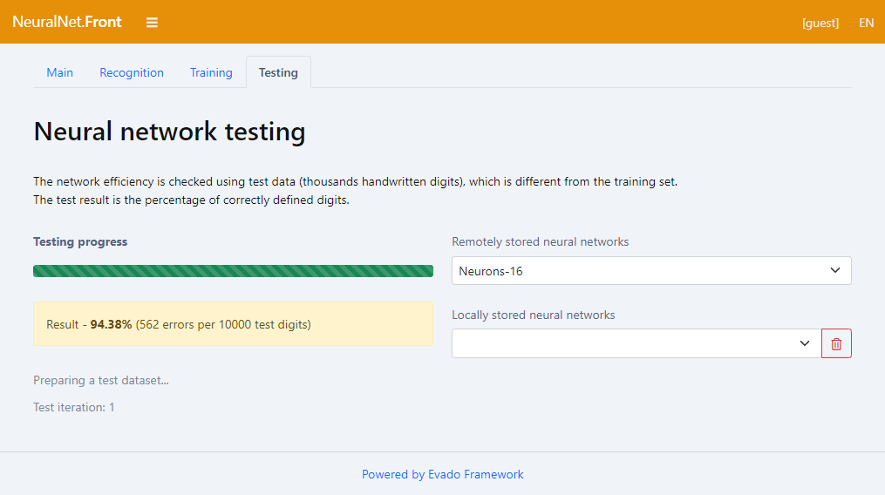
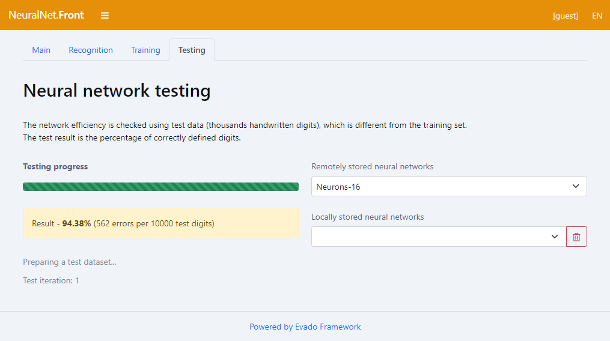

Тестирование нейросети
Результатом проверки нейронной сети является процент правильно распознанных цифр из тестового набора. Тестовые данные отличаются от тех, на которых происходит обучение.
Результатом проверки нейронной сети является процент правильно распознанных цифр из тестового набора. Тестовые данные отличаются от тех, на которых происходит обучение.
